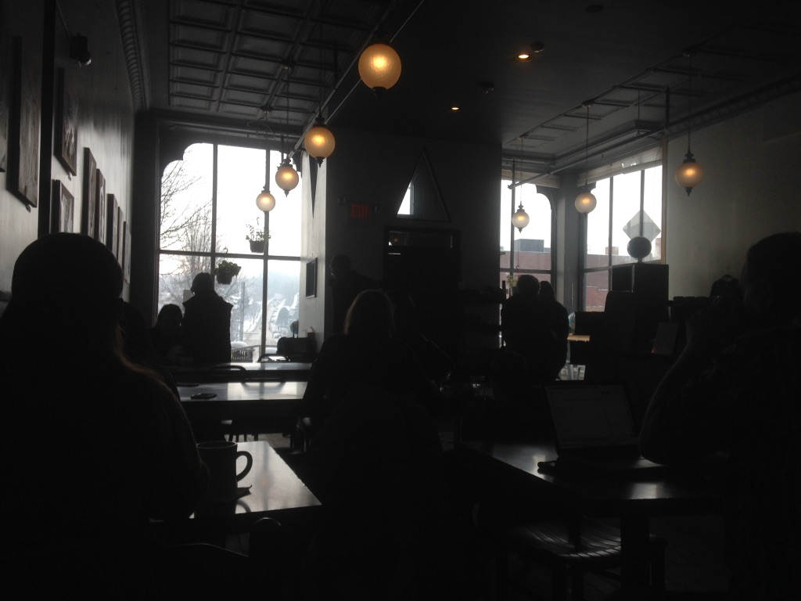

We sift through life without any compasses to guide us through the messy unknown, like aimless treasure hunters searching for diamonds in the dark.
The unknown scares us. We’re not so comfortable immersed in this infinite expanse. Maybe this is why the human brain has evolved the ability to construe stories from unrelated anecdotes and scattered tidbits: we find comfort in connecting the dots, we tell ourselves everything happens for a reason.
Stories provide our lives a sense of coherence, a hedge to prop ourselves on in the face of uncertainty. Sometimes they make things more beautiful, sometimes they prompt us to act; often times, they leave us wondering. “She likes me––right?”
Life will always present us with opportunities that have the potential to profoundly alter our course along its river. It may be a person we meet, a change of job or city, a sobering rejection, a desire for more out of life. A cup of tea.
These events are no more than events in themselves. But perhaps more beautifully, if we allow them to be, they are the unexpected serendipities that shape who we are, and who we become.
Life is an edgeless marble; serendipity gives it form. What was once meaningless becomes something of impossible importance. The stagnant becomes animate. It looks natural and feels seamless. It sings and breathes and dances and has a reason for existence.
Serendipity gives us permission to own a small part of life. It lets us grasp and claim this unusual sense of being, this constellating moment of existence, this thing we call My life.
Hello Vermont.
